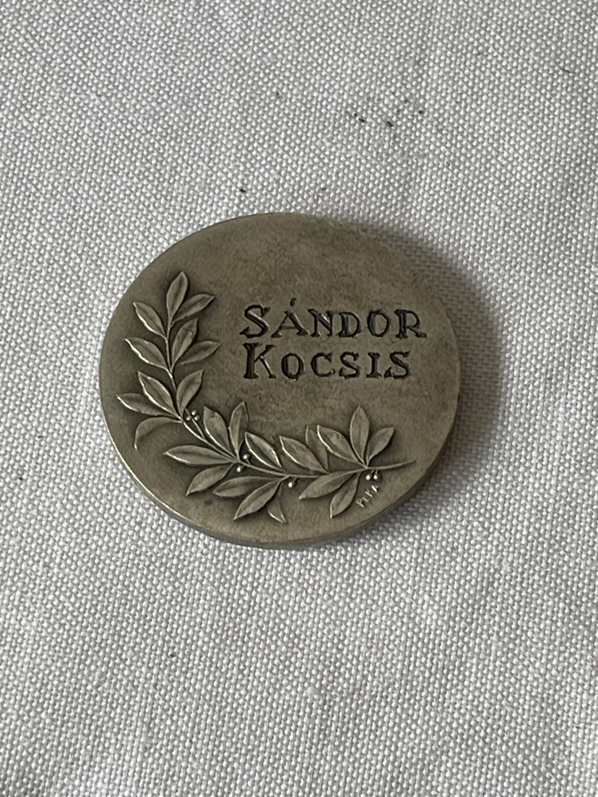

Top Scorer Medal SANDOR KOCSIS
21 September 1929 - 22 July 1979
The striker for the Hungarian national team scored 11 goals and his team finished as runner-up in the World Cup behind Germany.

If you have any questions, please do not hesitate to contact us.